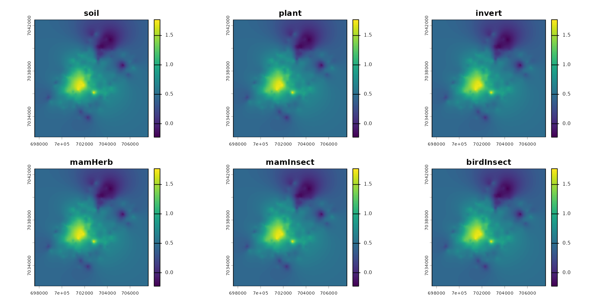

zoo_ecossl
zoo_ecossl.RmdBuild a spacemodel to get Eco-SSL risk layer
First step is load the package spacemodR.
You can install from CRAN or from the github repository
library(spacemodR)Habitat
The first step is to build a raster stack with the ground as raster.
# the raster tif file is internal to the spacemodR package
ground_cd <- load_raster_extdata("ground_concentration_cd_compressed.tif")
terra::plot(ground_cd)
names_hab = c("soil", "plant", "invert", "mamHerb", "mamInsect", "birdInsect")
list_habitat <- lapply(names_hab, function(i) ground_cd)
stack_habitat <- raster_stack(list_habitat, names_hab)
terra::plot(stack_habitat)
Food Web
The second step is to build the trophic web, all species connecting directly to the soil.
trophic_df <- trophic() |>
add_link("soil", "plant") |>
add_link("soil", "invert") |>
add_link("soil", "mamHerb") |>
add_link("soil", "mamInsect") |>
add_link("soil", "birdInsect")
attr(trophic_df, "level")
#> soil plant invert mamHerb mamInsect birdInsect
#> 1 2 2 2 2 2
plot(trophic_df)
Merge Habitat and Food Web
The third step is to merge the raster stack with the trophic data.frame.
spcmdl_ecossl_h <- spacemodel(stack_habitat, trophic_df)
terra::plot(spcmdl_ecossl_h)
Transfer Soil-Target
# no dispersal for eco_ssl
ecossl_kernels <- list(
soil = NA, plant = NA, invert = NA,
mamHerb = NA, mamInsect = NA, birdInsect = NA)
ecossl_intakes <- intake(spcmdl_ecossl_h,
"soil -> plant" = ~ 10^x/32,
"soil -> invert" = ~ 10^x/140,
"soil -> mamHerb" = ~ 10^x/73,
"soil -> mamInsect" = ~ 10^x/0.36,
"soil -> birdInsect" = ~ 10^x/0.77,
default = 1, # for all other default is 1
normalize = FALSE # TRUE would weight every link to sum at 1
)
spcmdl_ecossl_risk <- transfer(
spcmdl_ecossl_h,
ecossl_kernels,
ecossl_intakes,
exposure_weighting="potential")Risk Indices
Finally, we build the Risk indice.
A plot of layer with risk threshold color scale.
# Risk colors
breaks_risk <- c(0, 0.1, 0.5, 1, 5, 10, Inf)
cols_risk <- c(
"darkgreen", # 0 - 0.1
"green", # 0.1 - 0.5
"lightgreen", # 0.5 - 1
"yellow", # 1 - 5
"saddlebrown", # 5 - 10
"#4A2C2A" # > 10
)
names_keep <- names(spcmdl_ecossl_risk)[names(spcmdl_ecossl_risk) != "soil"]
spcmdl_ecossl_risk_sub <- spcmdl_ecossl_risk[[names_keep]]
terra::plot(spcmdl_ecossl_risk_sub,
breaks = breaks_risk,
col = cols_risk)
poly <- roi_metaleurop
poly_vect <- terra::project(terra::vect(poly), terra::crs(spcmdl_ecossl_risk_sub))
rast_crop <- terra::crop(spcmdl_ecossl_risk_sub, poly_vect)
rast_final <- terra::mask(rast_crop, poly_vect)
terra::plot(rast_final,
breaks = breaks_risk,
col = cols_risk)
checking Eco-SSL
For this very simple example, a simple check can be done, because Eco-SSL is a computing of a risk based on the amount in soil:
check_ecossl_risk = list(
"soil -> plant" = 10^ground_cd/32,
"soil -> invert" = 10^ground_cd/140,
"soil -> mamHerb" = 10^ground_cd/73,
"soil -> mamInsect" = 10^ground_cd/0.36,
"soil -> birdInsect" = 10^ground_cd/0.77
)
r_check_ecossl_risk = terra::rast(check_ecossl_risk)
terra::plot(r_check_ecossl_risk,
breaks = breaks_risk,
col = cols_risk)